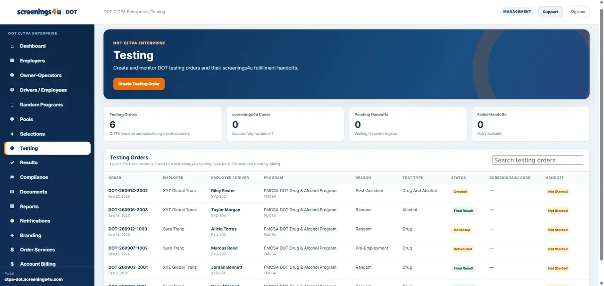

FMCSA Program Records
Manage FMCSA drug and alcohol program records and keep program status connected to the driver record.
Keep your FMCSA drug and alcohol testing program, random pool participation, testing activity, results, documents and compliance history in one focused workspace.

This workspace is for owner-operator drivers regulated by the Federal Motor Carrier Safety Administration (FMCSA), with workflows centered on 49 CFR Part 382 requirements.
Manage FMCSA drug and alcohol program records and keep program status connected to the driver record.
Track pool participation and the random-testing activity tied to your compliance program.
Create and manage testing orders and keep outside-provider records in the same workspace.
View authorized result summaries and sensitive result detail when permitted.
Keep compliance documents and certificates connected to the owner-operator account.
Track compliance cases, deadlines, requirements and permitted account activity history.

Pool participation, selection activity and testing records stay together instead of being split across spreadsheets, email and separate folders.
Testing orders, status and authorized results can live in the same workspace as the compliance program behind them.


Documents, certificates, result records and reports stay organized around the same owner-operator account.
Workforce DOT Owner-Operator plans are structured as Essential, Plus and Complete for a single FMCSA-regulated driver.
Core owner-operator tools for driver records, FMCSA programs, random pool participation, testing orders, documents and standard reporting.
View plan details →Adds authorized result summaries, sensitive result access and compliance management for the owner-operator account.
View plan details →Adds advanced reporting and audit history for a more complete FMCSA compliance record.
View plan details →